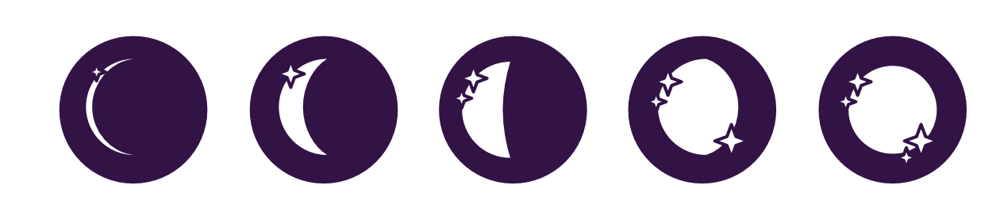
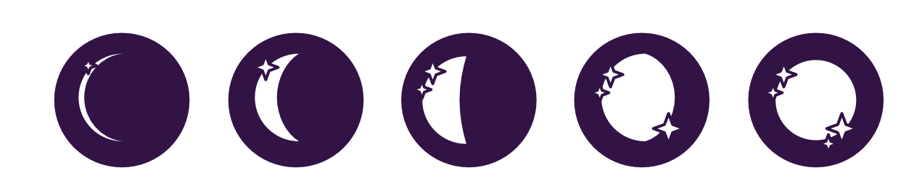
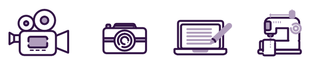

EndoBujo
Site web, charte graphique, Logotype et illustrations
endobujo est un site web d’information sur l’endométriose, une maladie chronique impactant une femme sur dix dans le monde. Il existe un manque de communication évident à propos de cette maladie induisant de longues années pour obtenir un diagnostic. Même une fois le diagnostic posé, il manque un véritable accompagnement pour informer les femmes sur cette maladie et les dégâts qu’elle peut causer.
endobujo a été créé pour aider ces patientes à acquérir les connaissances nécessaires à une amélioration de leurs symptômes : “Le savoir est le pouvoir”.
Le thème du site a été inspiré par ma propre expérience de patiente et la biographie d’une endométriosique qui pousse les malades à réfléchir, s'informer et prendre en main leur santé. J’ai voulu m’inspirer de l’univers des sorcières, qui sont des archétypes de femmes fortes capables d’apprendre et partager leurs connaissances entre elles. Les illustrations représentent des physiques féminins différents et puissants, à l’image de ces sorcières. L’identité visuelle tourne également autour de la lune, astre rapporté régulièrement au féminin de part l’aspect changeant et endobujo de son apparition dans notre ciel, faisant ainsi référence au nom du site et au cycle menstruel.

Allier un univers graphique assez mystique avec un contenu pourtant très scientifique et sourcé est un choix créatif, une manière aussi de montrer que ce que l'on pourrait prendre pour de l'ésotérisme n'est finalement que de la science qu’on ne comprend pas encore.
La plupart des sites d’information à propos d’une maladie sont assez austères et formel. Il était important de pouvoir casser ce code avec ce site, puisqu'il donne, de part son aspect illustré, l’envie d’y passer du temps et de lire les différents articles.
J’ai donc voulu créer un design autant beau qu’utile pour ces femmes malades. En faisant le choix de moins représenter la maladie, la douleur et le désespoir puisque le site est là pour donner de l'espoir et montrer que les symptômes peuvent diminuer et se gérer avec la bonne hygiène de vie et les bonnes sources d’informations.
voir le site